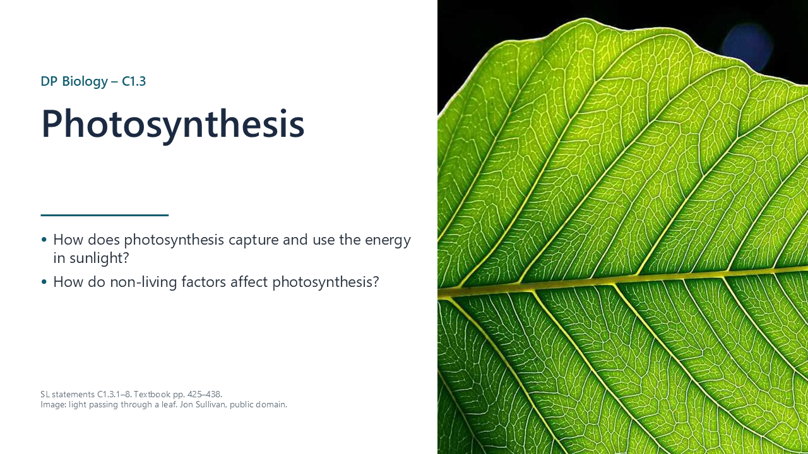
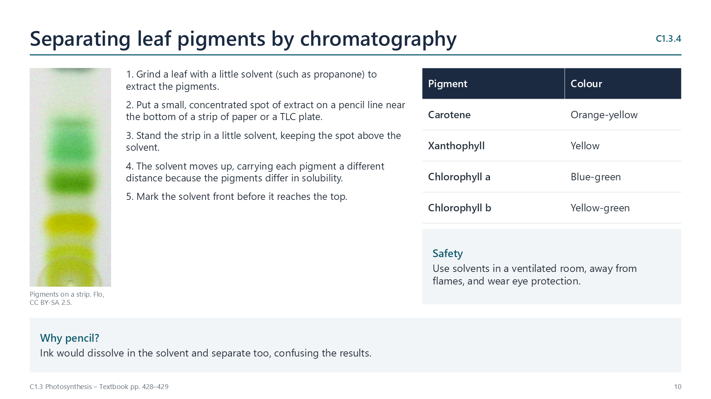
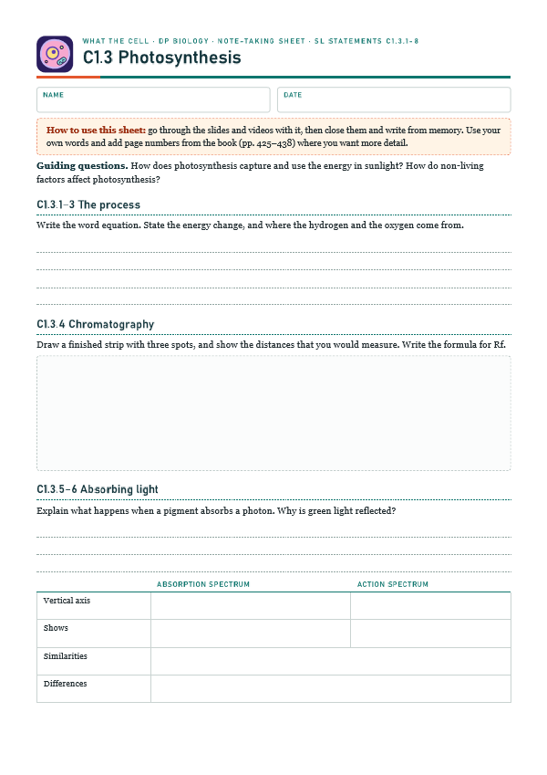
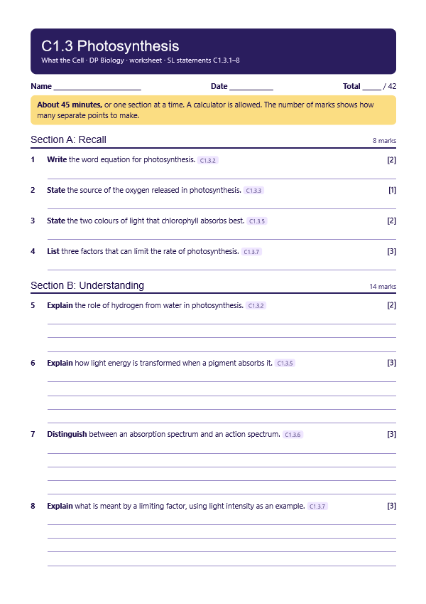
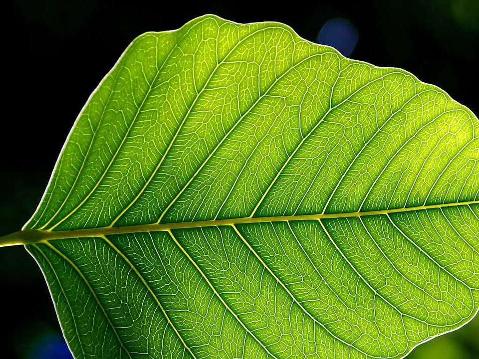
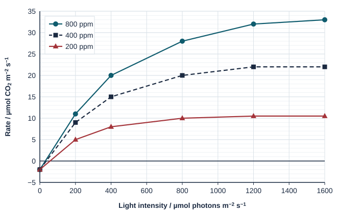

From light energy to chemical energy
pp. 425–438Photosynthesis transforms light energy into chemical energy, stored in carbon compounds. This supplies most of the chemical energy needed for life processes in ecosystems.

Written for this site from the class slides. The chapter is on pages 425–438 of the course textbook. Image credits are on slide 28.
Photosynthesis transforms light energy into chemical energy, stored in carbon compounds. This supplies most of the chemical energy needed for life processes in ecosystems.
carbon dioxide + water → glucose + oxygen. Water is split, using light energy, and its hydrogen is used to reduce carbon dioxide.
Plants, algae and cyanobacteria release oxygen, which comes from the splitting of water. It is a by-product of this process, and it diffuses out.
Watch out: the oxygen comes from water, and not from carbon dioxide.
A leaf extract is spotted on a strip, and a solvent moves up it. Pigments separate, as they differ in solubility.
Rf = distance moved by pigment / distance moved by solvent. Identify pigments by colour and by Rf. For example, a pigment moving 36 mm with a solvent moving 80 mm has Rf = 0.45.

When a pigment absorbs a photon, an electron is excited to a higher energy level, so light energy has become chemical energy. Only some wavelengths have the right energy to do this. Chlorophyll absorbs red and blue best, and reflects green.
| Absorption spectrum | Action spectrum | |
|---|---|---|
| Vertical axis | Percentage of light absorbed | Rate of photosynthesis |
| Similarities | Both peak in red and blue, and both are lower in green | |
| Differences | Rate does not fall as low as absorption in green, as accessory pigments and scattering help | |
The rate is limited by whichever factor is furthest from its optimum. To investigate: move a lamp to vary light intensity, add sodium hydrogencarbonate to vary CO2 concentration, and use water baths to vary temperature. Measure oxygen production, or carbon dioxide use by following pH.
Enclosed greenhouses add CO2 to a closed space, which makes it easier to control other factors. FACE experiments release CO2 over open plots, so conditions are closer to natural ecosystems. Growth often rises at first, but by less than predicted.
Select a video to play it here. Select it again to close it.
Print this guide and complete it as you work through the slides and videos. It asks for your own explanations, so close the notes while you try each section.

The self-check needs JavaScript to run.
A printable worksheet covering all eight statements, from quick recall to data questions and a longer answer. It has 42 marks and takes about 45 minutes, or you can do one section at a time.
Your teacher has the mark scheme.

Questions built on realistic experimental data, in the style of Paper 1B and Paper 2. Work them on paper and show your working. 13 marks in total. Your teacher has the mark scheme.

Wheat seedlings were grown at three carbon dioxide concentrations, in parts per million (ppm). The rate of photosynthesis was measured as net carbon dioxide uptake at different light intensities. Temperature was kept at 25 °C.

Leaves of English ivy (Hedera helix) that grew in full sun were compared with leaves that grew in the shade of other leaves on the same plant. Values are means of 20 leaves, ± 1 SD.
| Sun leaves | Shade leaves | |
|---|---|---|
| Leaf area / cm2 | 18 ± 3 | 31 ± 5 |
| Total chlorophyll / mg g−1 | 1.6 ± 0.2 | 2.4 ± 0.3 |
| Chlorophyll a : chlorophyll b | 3.4 | 2.6 |
You will need: Leaf discs, syringe without needle, dilute sodium hydrogen carbonate, lamp, ruler, beakers, timer
Safety: Keep water away from lamps and sockets. Lamps get hot.
Carry this out with your teacher's supervision and follow your school's lab rules.
Van Helmont grew a willow in weighed soil and concluded that it gained its mass from water. His data were good, but he missed the role of air.
He could not test for what he had not thought of. Consider how existing ideas limit how we interpret results.
Summarised in our own words. Use each code to find the exact wording in your textbook or the IB subject guide.
© 2026 Akash Parthi Bendran. Please ask before using or sharing any resources from this site: see permission to use.